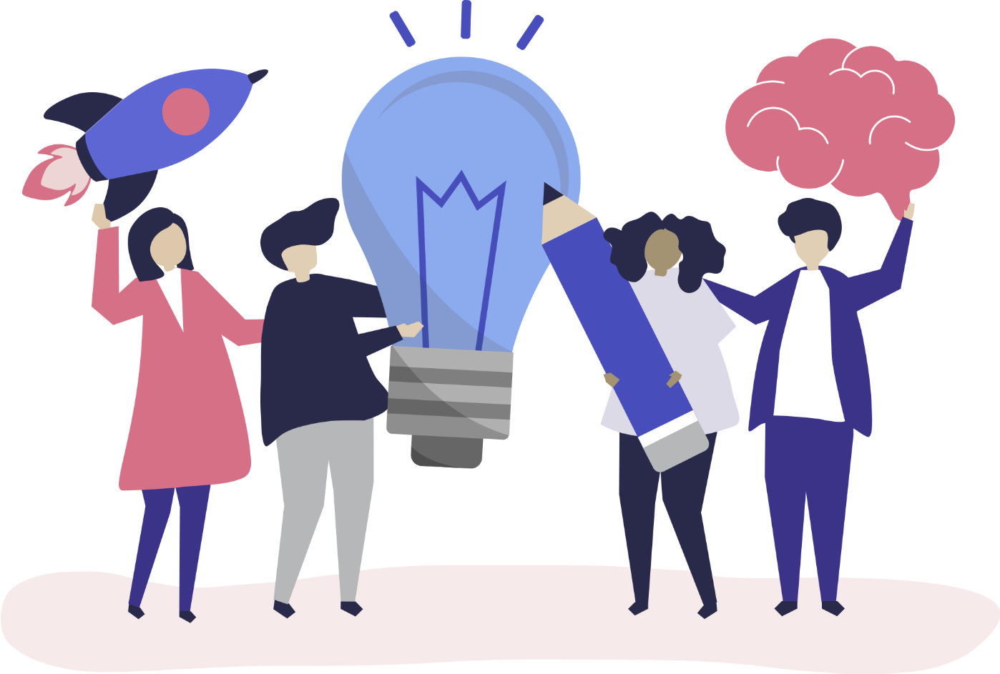

Empowering Non-Techies with Tech
Foundation for Media Alternatives called for human rights defenders, advocates, and technologists to gather for a three-day camp to empower one another with new practices, resources, and technology.
Roughly fifty people with diverse backgrounds and expertise coming from various regions of the Philippines gathered in the camp to share their knowledge and insights with their fellows. The camp was held in a private resort which is a great place to meet new people, make friends and have fun at the same time while understanding the biggest issues of the Internet and Web. This includes online privacy, cybersecurity, inclusion, and literacy, just to name a few.

Open innovation
The idea of the camp’s program is to promote an “information age mindset” towards innovation to counter silo mentality. As openness drives innovation, inputs of everyone will predict the success of the event.
Minds are like parachutes; they work best when open. – T. Dewar
On the first day, participants were asked to propose topics that they will discuss for a span of one and a half hour. The topics may be discussed by an individual or as a group to encourage participation. There were open slots each day, enough to discuss and share each participant’s knowledge and personal experiences with the others during breakout sessions.
After slots were filled up, participants started to choose among the topics and sessions where they think they will learn best and where they were most likely to contribute.
The approach kept the participants engaged and willing to dedicate their time and ideas, understand better others’ points of view, see new perspectives, and build strong bonds.
Understanding the Internet
As modern jobs and roles are created nowadays because of the internet, many of the people who use it do not have a complete understanding (or at least an inaccurate one) of how it really works.
The internet is the first thing that humanity has built that humanity doesn’t understand. – Eric Schmidt
JC Marquez one of the participants, gave a lightning talk on how the Internet works, how data is transmitted from one device to another, the difference between the Internet and the Web, its history and principles.
Know more about how the internet works here.
Privacy add-ons and tools
Websites may be used by companies for unsolicited marketing messages and data monetization, and by the government for tracking and massive surveillance, so it is vital for internet users to uphold their rights to privacy even without deep technical knowledge on websites.
Browser add-ons extend the web browser’s capabilities to perform additional features, modify website appearances, and behaviors.
In one of the breakout sessions, technologists and privacy enthusiasts shared their recommended and noteworthy privacy add-ons and online services.
Email Providers
ProtonMail is an end-to-end encrypted email service founded in 2014 at the CERN research facility.
Tutanota is a free and open-source end-to-end encrypted email software and freemium hosted secure email service.
Web Browsers
Firefox is a free and open-source web browser developed by the Mozilla Foundation.
The Onion Router (Tor) is an open-source software that helps you stay anonymous online.
Browser Add-ons
- Multi-Account Containers
- HTTPS Everywhere
- LastPass
- Wappalyzer
- Cookie AutoDelete
- Disconnect
- Lightbeam
- Web of Trust
Collaboration for Good
To achieve the objectives of the camp, that is, to move forward based on knowledge exchange, cooperation, and community building, takeaways are essential that will serve as the outline for the event’s success.
For the last activity of the camp, everyone gathered at the event hall where the facilitators prepared ideation tools. Each participants started to planned out their project ideas for the common good.
Then, participants presented the ideas to everyone for further ideation and to look for passionate people who can help execute the projects.
Now, these project ideas remain in the heart of every one who were present that time, waiting for anyone to spark the change in their respective communities.